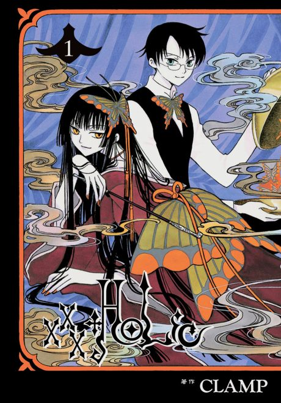

Manga continues fromCh. 119
Anime
Manga continues fromCh. 119
Anime
MangaxxxHOLiC
XXX ホリック
AniList7.6
Animeter—
2 seasons37 ep
MangaCh. 119
Anime finished. Where does the manga pick up?
Start at Chapter119
The TV anime does not follow the manga to its conclusion and ends with an open-ended, non-canon finale. Season 1 roughly reaches chapter 62 and Kei roughly reaches chapter 118, so continue at chapter 119 (volume 14); later OVAs adapt volumes 14-17. The manga is finished at 213 chapters.
162118214 end
xxxHOLiCxxxHOLiC KeiStart reading here